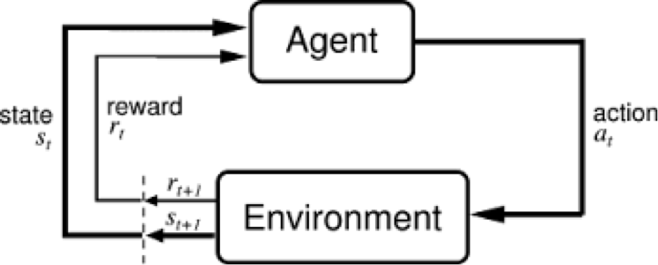

Deep Reinforcement Learning
1. Introduction
To give a very intuitive explanation of what reinforcement learning is. Imagine a baby that has come across a candle that is lit.
So, out of curiosity the baby tries to touch the candle flame and will get hurt. But this experience will make him more cautious,
and he will not repeat the action again.
This is exactly how reinforcement learning works. An agent learns to do a particular job based on the previous experiences and outcome it receives.
Like a child receives spanking and candies, the agent gets negative reward for wrong decisions and positive rewards for the right ones. This is basically reinforcement.
2. Background Material
Reinforcement Learning (RL)
Reinforcement Learning (RL) is mainly based on learning via interaction with the environment. At each step the agent interacts with the environment and learns the consequences of its actions via trial and error. The agent learns to alter its behaviour in response to the reward received due to its actions.
In RL, an autonomous agent is controlled by the machine learning algorithm and it observes a state s(t) at timestep t. It can then interact with the environment using an action a(t), reaching the state s(t+1) in the process. After reaching each new state, the agent receives a reward associated with that state r(t+1).
The aim of the agent is to find an optimal policy. The policy is the strategy that the agent employs to determine the next action based on the current state. It maps states to actions, the actions that promise the highest reward.

However the problem faced is that the reward obtained at each state is unknown and the agent needs to learn the consequences of its actions by trial and error. Every interaction with the environment yields information, which the agent uses to update its knowledge.
A Reinforcement Learning problem can be represented using a Markov's Decision Process as follows:
- A set of states S. A state s is the situation in which the agent finds itself. For an agent who is learning to walk, the state would be position of its 2 legs. For an agent playing chess, the positions of all the pieces on the board would be the state.
- Set of actions(per state) ùê¥. An action is what an agent can do in each state. Given the agent who is learning to walk, the actions would include taking steps within a certain distance.
- Transitions ùëá(ùë†, ùëé, ù놂Äô), mapping the state-action pair at time t to its resulting states. It specifies the probablity that environment would transition to s', if the agent takes the action a when it is in state s.
- Reward function ùëÖ(ùë†, ùëé, ù놂Äô), representing the rewards for a particular transition. It is basically a feedback from the environment and is measures the success or failure of an agent's actions. For example, when mario touches some coins he wins positive reward.
- Discount Factor γ ∈ [0,1], where lower values emphasize immediate rewards. It makes future rewards worth less than immediate rewards so that the agent does not delay necesarry actions.
If the MDP is episodic, i.e., the state is reset after each episode of length T, then the sequence of states, actions and rewards in an episode constitute a trajectory of the policy. Every trajectory of a policy accumulates rewards from the environment, resulting in the return
R= Σ
γtrt+1
A policy is the strategy that the agent employs to determine the next action based on the current state. It maps a state to an action.
a = π(s)
The goal of RL is to find an optimal policy, π∗ , which achieves the maximum expected return from all states
π∗ = argmaxπ E[R|π]
It is also possible to consider non-episodic MDPs, where T = ∞. In this situation, γ < 1 prevents an infinite sum of rewards from being accumulated.
A key concept underlying RL is the Markov property:
"Only the current state affects the next state, or in other words, the future is conditionally independent of the past given the present state."
This means that any decisions made at st can be based solely on st-1, rather than {s0, s1, . . . , st-1}.
This assumption is somewhat unrealistic in different scenarios, as it requires the states to be fully observable.
A generalisation of MDPs are partially observable MDPs (POMDPs). A POMDP models an agent decision process in which the system dynamics are determined by an MDP, but the agent cannot directly observe the underlying state. Instead, it must maintain a probability distribution over the set of possible states, based on a set of observations and observation probabilities, and the underlying MDP.
Deep reinforcement learning (DRL)
Perception, and representation of the environment is one of the key problems that must be solved before the agent can decide to select an optimal action to take. In reinforcement learning tasks, usually a human expert provides features of the environment based on his knowledge of the task. This causes the lack of scalablity and is hence limited to fairly low-dimensional problems.
This is where the deep neural networks come in. The powerful representation learning properties of deep neural networks has provided us with new tools to overcoming these problems, as they can overcome the curse of dimensionality, by automatically finding compact low-dimensional representations (features) of high-dimensional data (e.g., images, text and audio).
DRL was first popularised by Gerry Tesauro at IBM in the early 1990s when he introduced the famous TD-Gammon program which combined neural networks with
temporal-difference learning (explained later) to train an agent that would play world class backgammon.
The first, major revolution in DRL, was the development of an algorithm that could learn to play seven Atari 2600 games from the Arcade Learning Environment, which represents the first deep learning model to successfully learn control policies directly from high-dimensional sensory input using reinforcement learning.
The second major success of DRL was the development of, AlphaGo, a DRL system that defeated a human world champion in Go.
So, where do the neural networks fit in? In real life when we are the agents, we perceive the environment through our senses (eyes, nose, etc.), understand the state we are in, then we evaluate different actions and calculate the reward for each one of them.
In DRL, neural networks are the agents that are responsible to map different sensory inputs to the output that would allow the optimal policy to be deduced. Neural networks use their coefficients to approximate the function realting the inputs to the outputs,
it finds the right coefficients (or weights) by iteratively descending through the loss function gradients.
Deep neural network solves the problem of perception and representation of the environment, as convolutional networks are being used to recognize agent's state.
So, the input would be just raw pixels to the convolutional network (for eg. the screen of a Mario game), the network would extract useful information from the image in order to calculate the reward or probability of the different actions possible.
Whether the agent directly outputs the probability of actions, or it ouputs the rewards for each state-action pair depends the algorithm we are using (policy gradient method or q learning method). These methods would be discussed in detail in the later sections.
The above image is an illustration of a policy agent. Given the input in raw pixels, it will output the probability of each action, i.e., it maps state to actions.
Initially the weights of the network are initialized randomly. The learning takes place from the feedback of the environment, the neural network can use the difference between the ground truth reward (from the environment) and its expected reward (calculated by the network) as the loss function,
and backpropagation through this loss function can be used to update the network weights to improve is interpretation.
We would be discussing some of the papers of Deep Reinforcement Learning in detail in later sections to more deeply understand the methodology.
Common terminologies
We will explain some of the common terms that are used in the context of reinforcement learning that would be used in further discussions:
- Value function (V) : It is the expected long-term return (considering the discount factor). As opposed to the short-term reward given by reward function R. Vπ(s) is the expected long-term return of the current state under policy π.
- Q-value or action-value (Q): It is similar to Value, except that it takes an extra parameter i.e., the current action a. Qπ(s, a) refers to the long-term return of the current state s, taking action a under policy π. Q maps state-action pairs to rewards.
- Model based vs Model free reinforcement learning : We represented RL problem as an MDP problem which can be characterised by (S,A,R,T).
So, if we know all the components of this MDP, we can compute the optimal policy without actual running in an environment. It would reduce to a planning problem, and there are classic planning algorithms for MDPs such as value iteration, policy iteration, etc.
But what makes the RL problem different from a planning problem is that the elements of the MDP are not usually known. More specifically the transition function T (how the environment would change in effect to an action), or the reward function R is not known a-priori. So, the agent has to perform action and observe the feedback from the environment.
So, if the agent doesn't know T and R, how will it find the optimal policy? There are 2 ways to do this:
- Model based approaches : The agent can learn a model of the environment, i.e., it can learn T and R functions from its observations.
That is, if the agent is currently in state s1 and takes action a1, the environment transition to state s2 given reward r2,
this information will be used to improve the current estimate of T(s2|s1,a1) and R(s1,a1). Following this iterative approach, a model for the environment can be learned.
After that, a planning algorithm can be used on the learned model to find a good policy.
Such approaches which learn the model first are known as model-based RL algorithms.
- Model free approaches : It turns out that it is not necessary to learn the model in order to learn a good policy. One of the most famous example of this approach would be that of
Q-learning (explained in detail later) which directly estimates the Q-values i.e. the utility value of each action in each state through the experiences. A policy can then be derived by choosing the action with the highest Q-value in the current state.
These approaches which learn a policy without actually learning the model are model-free approaches.
- Off-policy vs on-policy learning : There is a famous exploration vs exploitation dilemma in RL and an agent must strike
a balance between the two phenomenon. Exploitation is to make the best decision given the current information, and exploration is gathering more information.
- On-policy learning is analogous to explotation. In on-policy learning, the action which is sampled for learning (iterative updates) is the action from the current policy.
- In off-policy learning, the action selected for the next iteration is not from the current policy. The policy used to generate behaviour, called the behaviour policy, may be unrelated to the policy that is evaluated and improved, called the estimation policy.
- Temporal difference learning : It is a central concept in reinforcement learning. Let us give an intuition for the concept.
Consider you want to make a model to predict the price of a particular stock. Finally, we want a prediction model which can predict what the price of the stock would be after an hour.
The naive approach would be to make a prediction model for predicting the stock price after an hour, wait for an hour and update the model using the error.
What temporal difference learning suggests is to not wait for an hour, but instead iteratively update the model by predicting the stock price every other minute.
We initialize the value function V at each state randomly. This is our initial estimate.
After this we follow the policy π, going from st to st+1 and getting reward Rt+1.
We will update our value function V(st) based on this one step reward (instead of waiting for termination and getting final reward), using simple update rule:
V(st)←V(st)+α(Rt+1+γV(st+1)−V(st))
The term (Rt+1+γV(st+1)−V(st)) is called the one-step temporal-difference error,
We keep updating our estimates of the value function till termination, and according to theory if we do this for a large number of time, we would converge to the optimal measure of the value function.
- Policy gradient vs Q-learning : Q-learning and policy gradients are the two major approach used to solve RL problem. Q-learning learns to predict the expected reward of perform an action a in a particular state s, whereas policy gradient directly predicts the action itself.
Someone may ask that these two approaches are equivalent as predicting the action with maximum reward (in Q-learning) is equivalent to predicting the probability of taking that action directly.
But the fundamental difference is difference in how they approach action selection (both while learning and in the output).
In Q-learning, a single deterministic action is learned from a discrete set of actions by
finding the maximum expected value. Whereas in policy gradient, the goal is to learn a
map from state to action, which can be stochastic, and works in continuous action spaces.
As a result, Q-learning fails when the optimal policy is a stochastic one (such as stone/paper/scissor) because
Q-learning assumes that a deterministic agent can be optimal.
However Q-learning are faster to learn becuase they can use the concept of temporal difference learning, whereas in
policy gradient method the reward is received at termination.
Challenges in RL
A summarization of the challenges faced by RL are as follows:
- The optimal policy must be inferred by trial-and-error interaction with the environment as the rewards corresponding to transitions are unknown.
- Most deep learning algorithms assume that the data samples are independent.
While in RL, the observations of the agent depend on its actions and can contain strong temporal correlations.
For example, if a robot decides to explore one of the two paths available, the observations will be dependent on the previous observations and contains correlations, and hence the assumption of independent data samples is broken.
- Agents must deal with long-range time dependencies:
Often the consequences of an action only materialise after many transitions of the environment.
For example, in a game of ping-pong after going through many frames and actions, a reward would be obtained depending on who wins the point.
3. Methodology
Deep reinforcement learning using Q-learning
We would be talking about the paper "Playing Atari with Deep Reinforcement Learning" by Mnih et al. The model
directly learns optimal policy from high-dimensional sensory input (not any hand-crafted representation).
They use a convolutional neural network which is trained using a variant of Q-learning. The input to their model
is the raw pixels and output is the value function estimating future rewards.
They applied their method to seven Atari 2600 games from the Arcade Learning Environment. This algorithm outperforms
all previous approaches on six of the seven games, and outperforms humans in three of the games
Introduction of Q-Learning
In this algorithm, the aim of the agent is to learn an optimal policy based on its interaction with the environment.
The interaction can be specified with a history which is a sequence of state-action-rewards ⟨s0,a0,r1,s1,a1,r2,s2,a2,r3,s3,a3,r4,s4...⟩.
which means that the agent was in state s0 and did action a0, which resulted in it receiving reward r1 and being in state s1, and so on.
The aim of the agent is to learn a policy such that its value (usually the discounted reward) is maximized.
Q*(s,a), where a is an action and s is a state, is the expected value (cumulative discounted reward) of doing a in state s and then following the optimal policy.
Q-learning uses temporal differences to estimate the value of Q*(s,a). In Q-learning, the agent maintains a table of Q[S,A], where S is the set of states and A is the set of actions. Q[s,a] represents its current estimate of Q*(s,a).
An experience ⟨s,a,r,s'⟩ provides one data point for the value of Q(s,a). The data point is that the agent received the future value of r+ γV(s'), where V(s') =maxa' Q(s',a'); this is the actual current reward plus the discounted estimated future value. This new data point is called a return.
The update for Q[s,a] is as follows:
Q[s,a] ←(1-α) Q[s,a] + α(r+ γmaxa' Q[s',a']).
Playing Atari with Deep Reinforcement Learning
The paper shows that a Convolutional Neural Network (CNN) can be used to learn an optimal policy, and it can also overcome the challenges
of reinforcement learning that were explained earlier. Since this deep network is trained wih a variant of Q-learning (using gradient descent methods), the network is known as Deep Q-network (DQN).
We implemented this paper, and the code can be found here.
The agent interacts with an environment E, which in our case is the Atari emulator.
The agent selects an action from all the legal actions possible which is passed to the Atari emulator,
the internal state and the game score is modified. However, the internal state cannot be observed by the agent, instead it just
observes and image xt from the emulator which is the current screen. It also receives a reward rt which represents the change in game score.
Since the agent only observes images of the current screen, it is impossible to fully understand the current situation
from only the current screen xt. Therefore, the state is the sequence of actions and observations,
st = x1; a1; x2; :::; at-1; xt.
Also, all sequences in the emulator are assumed to terminate in a finite number of time-steps, hence this gives
rise to a large but finite Markov decision process (MDP) in which each sequence is a distinct state.
As a result, standard reinforcement learning methods for MDPs can be applied.
Now, that the environment, state, actions, and rewards are defined. The Q-learning algorithm that was explained above needs
to be applied. But it is very impractical to maintain a table Q[S,A] since the state space is extremely large (consisting of game sequences).
Hence, function approximator is used to estimate the action-value function.
Q(s; a; θ) ≈ Q∗(s; a)
A Deep network parameterized by θ is used as the function approximator. The DQN (Deep Q-network) is trained by minimising a sequence of loss functions Li(θi) that changes at each
iteration i:
Li (θi) = Es;a∼ρ(·) [(yi − Q (s; a; θi))]
where yi = Es'∼E [r + γ maxa' Q(s'; a'; θi−1)|s; a] is the target for iteration i and ρ(s; a) is a
probability distribution over sequences s and actions a that we refer to as the behaviour distribution.
Differentiating the loss function with respect to the weights we arrive at the following gradient
ΔŒ∏iLi (Œ∏i) = Es,a‚ຜÅ(¬∑);s'‚àºE [(r + Œ≥ max a' Q(s', a', Œ∏i−1) − Q(s, a; Œ∏i)) ΔŒ∏iQ(s, a; Œ∏i)]
Note that this algorithm is model-free: it solves the reinforcement learning task directly using samples from the emulator E, without explicitly constructing an estimate of E.
It is also off-policy: it learns about the greedy strategy a = maxa Q(s; a; θ), while following a behaviour distribution that
ensures adequate exploration of the state space. In practice, the behaviour distribution is often selected by an ε-greedy strategy that follows the greedy strategy with probability 1 − ε and selects a
random action with probability ε.
To alleviate the problems of correlated data and non-stationary distributions, a technique known as experience replay mechanism
is used which randomly samples previous transitions, and thereby smooths the training distribution over many past behaviors.
Agent’s experiences at each time-step, et = (st; at; rt; st+1)
in a data-set D = e1; :::; eN, pooled over many episodes into a replay memory. During the inner
loop of the algorithm, we apply Q-learning updates, or minibatch updates, to samples of experience,
e ∼ D, drawn at random from the pool of stored samples.
The advantages of the experience-replay mechanism are as given below:
- Since each experience is stored in memory, it is used in more than one update leading to greater data efficiency.
- Learning directly from consecutive samples is inefficient, due to the strong correlations
between the samples; randomizing the samples breaks these correlations and therefore reduces the
variance of the updates.
- Third, when learning on-policy the current parameters determine the next
data sample that the parameters are trained on. For example, if the maximizing action is to move left
then the training samples will be dominated by samples from the left-hand side; if the maximizing
action then switches to the right then the training distribution will also switch.
By using experience replay the behavior distribution is averaged
over many of its previous states, smoothing out learning and avoiding oscillations or divergence in
the parameters.
Based on the above discussion, the final algorithm is as given in the image:
Pre-processing and model architecture
The Atari emulator gives an image of 210×160 pixels image. The raw frames are preprocessed by first converting their RGB representation
to gray-scale and down-sampling it to a 110×84 image.
The paper also crops this image to 84×84 because their GPU implementation of conv2d operation requires squared input, but we have skipped this step.
Since Q maps history-action pairs to scalar estimates of their Q-value, the history and the action should have been used as inputs
to the neural network.The main drawback of this type of architecture is that a separate forward pass is required to compute the Q-value of each action,
resulting in a cost that scales linearly with the number of actions. The paper instead use an architecture
in which there is a separate output unit for each possible action, and only the state representation is
an input to the neural network.
The archiecture of the model used is explained by the keras code below:
4. Experiments
We trained our DQN on the Atari game - Breakout. The network architecture, and preprocessing is used as explained above.
The hyperparameters used are explained below:
Also, a simple frame-skipping technique was used. More precisely, the agent sees and selects actions on every kth frame instead of every
frame, and its last action is repeated on skipped frames. Since running the emulator forward for one
step requires much less computation than having the agent select an action, this technique allows
the agent to play roughly k times more games without significantly increasing the runtime.
5. Observations
After training the DQN, it succesfully learns to play the breakout game as shown by the gif:

In the paper, it is shown that this approach gave state-of-the-art results in six of the seven games it was tested on, with no adjustment of the
architecture or hyperparameters.
6. State of the art extensions
Asynchronous Methods for Deep Reinforcement Learning
Current Deep RL algorithms based on experience replay have shown a lot of success but they have some drawbacks such as higher memoury and computation requirements,
and requirement of off-policy learning algorithms. This paper proposes an algorithm where we execute multiple agents asynchronously
in parallel on multiple instances of the environment. Multiple agents can run different exploration policies on multiple threads.
Advantages of using Asynchronous Methods
- We do not use a replay memory and rely on parallel agents employing different exploration policies to perform the stabilizing role undertaken by experience replay in the
DQN training algorithm. Since we no longer rely on experience replay for stabilizing learning we are able to use on-policy reinforcement learning methods.
- A reduction in training time that is roughly linear in the number of parallel agents.
- Previous approaches to deep reinforcement learning rely heavily on specialized hardware such as GPUs
, however this approach can run experiments on a single machine with a standard multi-core CPU.
When applied to a variety of Atari 2600 domains, on many games, asynchronous reinforcement learning achieves better results, in far less
time than previous GPU-based algorithms, using far less resources than massively distributed approaches.
The paper proposes asynchronous versions of 4 different reinforcement learning algorithms and shows that they
are able to train neural network controllers on a variety of domains in a stable manner.
The 4 asynchronous algorithms proposed are as follows:
- Asynchronous one-step Q-learning
- Asynchronous one-step Sarsa
- Asynchronous n-step Q-learning
- Asynchronous advantage actor-critic
References
- https://artint.info/html/ArtInt_265.html
- Playing Atari with Deep Reinforcement Learning